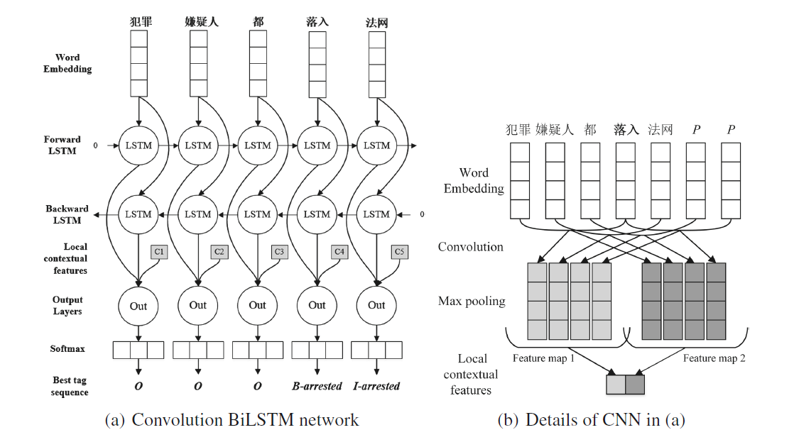
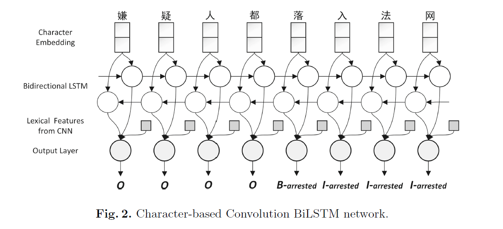

A convolution BiLSTM neural network model for chinese event extraction
摘要：中文事件提取是信息抽取中的一项具有挑战性的任务，以前的方法高度依赖于复杂的特征工程和复杂的自然语言处理（NLP）工具。 在文献[1]中，提出了一种结合LSTM和CNN的卷积双向LSTM神经网络来捕获句级和词汇信息。最终的测试中达到相当不错的水平。
1. Introduction
在事件提取中，我们需要提取事件类别、参与者和其他属性（时间、地点等）。根据Automatic Content Extraction（ACE）定义的事件抽取任务，我们定义：
- 触发词：最主要的、用于表达一个事件的词，通常是句子的谓语。
- 事件属性：实体、短语或数值。在一个事件中扮演特定作用。
因此，我们把事件抽取分为两步，即触发词标注和事件属性标注。例如：
S1：Intel在中国成立了研究中心。
其中，“成立”表明该句子表达了一个商业事件；Intel、中国、研究中心则是事件的属性，属性将被标注为参与者、地点、时间等。
目前的 state-of-the-art [2-4] 通常很依赖于特征的选择。这些特征通常可以被划分为语义特征和结构特征。再给两个包含”成立“的例子，但它在其中并不表达一个商业事件。
S2：它成立于1994年，现在是一支深受欢迎的摇滚乐队。
S3：医院已成立救援中心。
从结构特征上来看，S2可以被缩写为“它是乐队”，因此“成立”在这个句子中不是一个触发词，这个句子不是一个事件。
从语义特征上来看，S3中的“救援中心”的语义上看，这个事件不是一个商业行为，因此“成立”不表达一个商业事件。
传统的方法[2, 3]通常依赖于大量的NLP工具，对于语义特征而言，有词性标注、命名实体识别等；对于结构特征而言，有依存关系分析。尽管最终效果很好，但是这需要大量的人工特征，并且需要忍受传递误差。
Chen et al. [5] 提出了一个用于完成事件抽取的卷积神经网络。受此激发，本文提出一个卷积双向LSTM神经网络，用来同时捕获语义特征和结构特征。我们首先使用双向LSTM将整个句子中的单词的语义编码成句子级别的特征。 然后，我们可以利用卷积神经网络来捕获突出的局部词汇特征，以便在没有任何POS标签或NER帮助的情况下进行触发词消歧。
2. Trigger Labeling
2.1 Language Specific Issues
由于中文的特殊性，触发词可以被分为两类：
- 多词触发词：任何拆开后就无法被人为是触发词的，我们把它组合起来认为是触发词。例如“犯罪嫌疑人都落入法网”，其中“落入法网”被认为是触发词。
- 单词触发词：往往是谓语，但也可以是组合词中的一部分。例如“警察击毙了一名歹徒”中的“击毙”，“这是一件预谋的凶杀案”中的“凶杀”
为了解决这个问题，我们将事件检测视为序列标记任务而不是分类任务。 采用BIO方案，其中标记B是事件触发词的开始，I型是在触发词内，否则标记为O。我们利用卷积双向LSTM神经网络来完成这个任务。

我们基于单词模型的主要架构。 （a）中的每个词wt的局部上下文特征ct（灰色矩形）由CNN计算（b）所示。 我们的卷积神经网络学习了关于中心词“落入”的本地上下文信息的表示。 这里的上下文大小是7（中心词的左右各3个词），我们使用一个大小为4的内核与两个特征映射。 （b）句子中的符号P表示填充词。
2.2 Word-Based Method
LSTM Network 在nlp任务中LSTM相对常用，特别的，双向LSTM能够联系历史和未来的信息，能够重复利用句子信息，有利于我们进行判断。因为之前的报告已经叙述过，故这里略写。
CNN 卷积神经网络最一开始用于图像领域，近年也在nlp领域大放光彩。这里，我们采用卷积神经网络来提取句子中每个单词的局部上下文信息。
给定一个包含n个单词{w1, w2, … , wn}的句子和当前中心词wt，卷积运算包含一个内核，将其应用于wt周围的单词以生成特征映射。 我们可以利用不同宽度的多个内核来提取不同粒度的局部特征。 然后在每个map上执行最大汇集，以便仅记录每个特征地图的最大数量。 池的一个特性是它产生一个固定大小的输出向量，这使我们能够应用不同的大小内核。 而通过执行最大操作，我们保持最显着的信息。 最后，将固定长度的输出向量cwt作为关于中心词wt的本地上下文信息的表示。
在我们的实现中，滑动窗口大小为7（中心词的左右各3个词），并且我们使用不同的内核来捕获各种粒度的上下文信息。
Output Layer 我们将BiLSTM的隐藏状态与CNN在每个时间步t提取的上下文特征cwt连接起来。 然后[ht; cwt]被送入softmax层以产生wt的每个标记的对数概率。
然而，基于单词的方法仍然不能解决内部词触发引起的一致性问题，即无法识别长词内部的触发词。
2.3 Character-Based Method
为了解决一致性问题，我们可以采用Character-embedding，唯一的区别就在input layer。

3. Argument Labeling
上面介绍的触发词标注模型依然可以被沿用，我们将介绍用于触发词标注和事件属性标注的模型之间的主要区别。
3.1 Input Layer
作为一个pipeline系统，除了word embeddings之外，还可以使用从上面触发词标记任务中提取的信息。 因此，我们提出了另外四种类型的特征embedding来形成BiLSTM和CNN的输入层。
- 触发位置特征：一个单词是否属于触发词的一部分
- 触发类型特征：单词触发类型，NONE类型对于非触发词
- 实体位置特征：一个单词是否属于实体的一部分
- 实体类型特征：单词的实体类型，NONE类型对于非实体。 ACE数据集提供了实体识别的结果，无需使用外部NLP工具。（思考：若数据集不提供实体信息，两种解决方法：1. 不embed实体特征；2. 借助外部工具）
然后，我们通过查表将这些特征转换成矢量，并将它们与原始单词嵌入级联，作为BiLSTM和CNN的最终输入层。
3.2 Output Layer
值得一提的是，事件属性标注不再是一个序列标注任务，而是一个分类任务。 ACE数据集提供了实体识别的结果，它保证了事件属性只能出现在这些实体。 因此，我们只需要预测标记实体的角色，而不是整个句子中的每个单词。 例如，S4中有三个触发器（粗体字）和三个实体（斜体字），它们共同组成九对要分类的触发词和事件属性候选。
S7：六起谋杀案发生在法国，包括Bob的暗杀和Joe的杀害。
我们修改CNN和BiLSTM网络的输出层以适应新的任务。
对于BiLSTM，我们仍然试图利用其记忆长序列的能力，所以我们把最后一个单词hN的隐藏状态视为句子信息。
对于CNN，我们把整个句子的所有单词作为上下文，而不是每个中心单词的浅窗口。 最后，我们将来自两个网络的输出向量的串联输入到softmax分类器中，就像处理之前的触发词标注任务一样。
4. Conclusion
论文[1]主要提出了卷积双向LSTM神经网络，用以完成中文事件抽取任务，在ACE 2005数据集上获得了不错的结果。我在暑假时，将事件抽取认为为一个序列标注任务，使用BiLSTM+CRF；相比而言，论文[1]的模型考虑更全面，并充分利用已知的实体信息。不过对于现实问题而言，标注实体信息的成本也很高，故在没有实体标注的情况下保持性能也是一个难点。
Bibliography
[1] Zeng, Y., Yang, H., Feng, Y., Wang, Z., & Zhao, D. (2016). A convolution BiLSTM neural network model for Chinese event extraction. In Natural Language Understanding and Intelligent Applications (pp. 275-287). Springer, Cham.
[2] Chen, C., Ng, V.: Joint modeling for Chinese event extraction with rich linguistic features. In: COLING, pp. 529–544. Citeseer (2012)
[3] Chen, Y., Xu, L., Liu, K., Zeng, D., Zhao, J.: Event extraction via dynamic multipooling convolutional neural networks. In: Proceedings of the 53rd Annual Meeting of the Association for Computational Linguistics and the 7th International Joint Conference on Natural Language Processing, vol. 1, pp. 167–176 (2015)
[4] Li, Q., Ji, H., Huang, L.: Joint event extraction via structured prediction with global features. In: ACL (1), pp. 73–82 (2013)
[5] Chen, Y., Xu, L., Liu, K., Zeng, D., Zhao, J.: Event extraction via dynamic multipooling convolutional neural networks. In: Proceedings of the 53rd Annual Meeting of the Association for Computational Linguistics and the 7th International Joint Conference on Natural Language Processing, vol. 1, pp. 167–176 (2015)